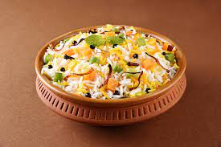
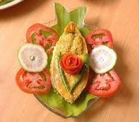

Most popular orders of this week
I have been bringing joy through food since the last decade. Each week we rank our foods by orders.
Special Biriyani
It is a spiced mix of meat and rice, traditionally cooked over an open fire in a leather pot. It is combined in different ways with a variety of components to create a number of highly tasty and unique flavor combinations.
Luchi-Alurdom

It is the preferred Bengali combination for a lazy Sunday brunch. The dish has Luchi that is similar to puris and is eaten with alur dum or aloo dom, that is a spicier and more tangy version of the dum aloo.
Shorshe Ilish
It is a delicious fish preparation made from deep-fried Hilsa fish. It’s a classic Bengali fish curry and is served a side-dish with rice or Khichudi. It’s made in both dried and curried forms.